A defined set of geometric constraints is supported by the Geometry Widget. Most constraints can be applied in two ways:
Implicit and explicit constraints can be shown on the figure with specific symbols. and are displayed with a different color:
The following table shows which constraints are supported and the various ways to define them:
| Constraint | Implicit creation | Explicit creation | Figure |
|---|---|---|---|
| Equality of length | Any shape that has two or more equal segments. |
Short line gesture on a segment or circle:
|
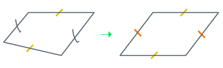 |
| Equality of angles | Any shape that has two or more equal angles. Remarkable lines:
|
Angle mark gesture (arc of circle) on two segments:
|
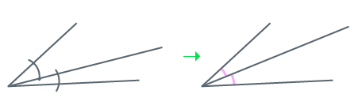 |
| Perpendicularity | Any shape that has at least one right angle. Remarkable lines :
|
Right angle gesture (chevron) in one stroke on two segments. | 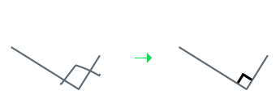 |
| Parallelism | Any shape that has two or more parallel segments. | One chevron on two different segments, to indicate that they are parallel. | 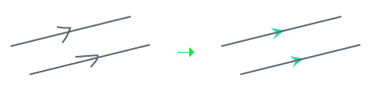 |
| Junction | Extremities of shapes or segments that have been drawn very close. Note that points are regarded as extremities here. |
Small ellipse on the two shapes or segments to join. You can also circle: - a point inside a circle to indicate it is the center - a segment inside a circle to indicate it is a radius |
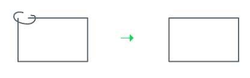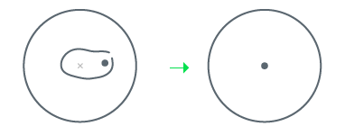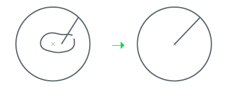 |
| Connection | An extremity or point connected to another shape or point | Small circle on the two shapes or segments to join.
You can also circle: - a segment crossing a circle to indicate it is the diameter |
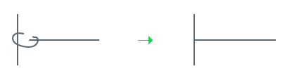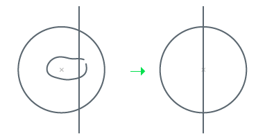 |
| Concentricity | Two circles whose centers are close | Circle two circles' centers |
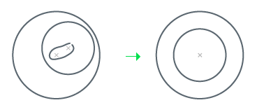 |
| Horizontal | An almost horizontal segment | n/a | |
| Vertical | An almost vertical segment | n/a | 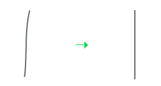 |
| Length value | n/a | Input the segment length | |
| Radius equality | Two circles with two similar diameters | see Equality of length | 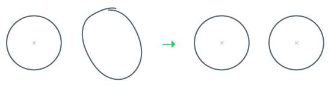 |
| Angle value | n/a | Input the angle value | 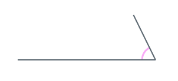 |